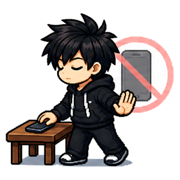
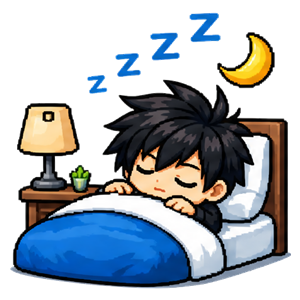
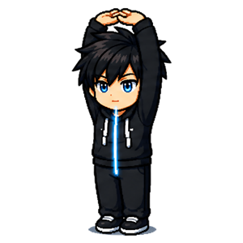
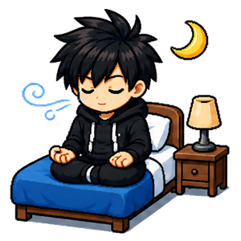
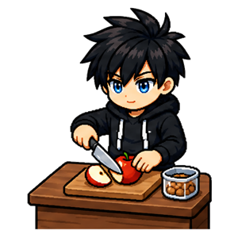
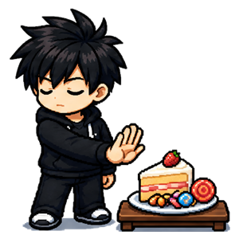

Habitudes pour la santé
Dormir, manger, s'hydrater. Dix habitudes sans régime, sans interdit et sans promesse en trente jours.






À quoi servent les habitudes de santé
Aucune de ces dix habitudes ne te demande un régime, ne t'interdit quoi que ce soit, ni ne te promet un résultat en trente jours. Elles font l'inverse de ce que fait l'industrie du bien-être : elles ajoutent une chose minuscule plutôt que d'en supprimer une grosse. C'est moins spectaculaire, et ça tient.
Le sommeil d'abord
Dormir 7 h, réduire les écrans et respiration avant dormir forment le socle, parce qu'un corps mal dormi rend toutes les autres habitudes plus dures. Le sommeil ne se rattrape pas le week-end : il se régularise, en se couchant à heure à peu près fixe. Et pour ceux qui mettent une heure à s'endormir en repassant leur journée, une minute de respiration fait davantage qu'une application de bruit blanc.
Ce que tu manges
Eau au réveil, fruits et légumes, petit déjeuner, repas maison, collation et réduire les sucreries suivent tous le même principe : ajouter ou remplacer, jamais interdire. Une portion de légumes en plus, une sucrerie remplacée par un fruit, une collation préparée à l'avance. On ne résiste pas au grignotage à la volonté — on l'anticipe la veille.
Le corps au quotidien
Étirements et posture est l'habitude des journées assises. Le mal de dos de bureau ne vient pas de la chaise : il vient de ne jamais en bouger. Deux minutes valent mieux qu'un fauteuil ergonomique dans lequel on reste immobile huit heures.
Une habitude qui se renforce — ou pas
Chaque habitude commence au palier 1, et il est ridiculement petit : un verre d'eau, une portion, dix minutes sans écran. Ce n'est pas de la modestie — c'est le seul format qu'on tient encore un mardi soir de novembre.
À force de la tenir, tu peux la renforcer : le verre d'eau devient 750 ml, la portion de légumes devient cinq, les dix minutes sans écran deviennent quarante-cinq. Chaque palier franchi rend ton personnage plus fort.
Mais rien ne t'y oblige. Tu peux garder une habitude au palier 1 aussi longtemps que tu veux. Une habitude confortable qu'on tient un an vaut infiniment mieux qu'une habitude ambitieuse abandonnée en trois semaines. C'est toi qui décides quand — ou si — tu montes.